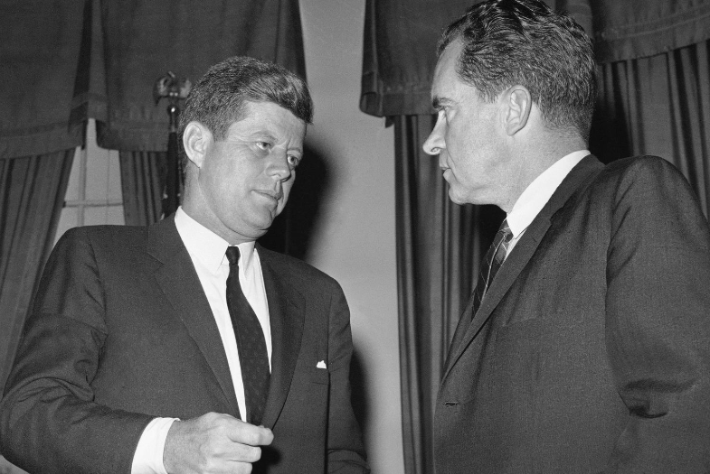

Former President Jimmy Carter Wins Posthumous Grammy
LOS ANGELES | AP News
By Karl Angelo B. Marteja
Victory in the Music World
Former President Jimmy Carter has been awarded a posthumous Grammy in the category of Best Spoken Word Album. In a competitive field, Carter beat out legends like Barbra Streisand and Dolly Parton, marking a historical achievement. Streisand, who had been aiming for her first Grammy win in 38 years, was left behind.
If Carter's legacy as a statesman wasn't enough, his immense passion for music shines through in this remarkable recognition.

The Impact of Music in Carter’s Life
As Jason Carter, Jimmy’s grandson, shared backstage, “Music has always been a vital part of his life, both politically and personally.”
The Grammy win adds to the prestigious achievements of former U.S. presidents in the world of music. Barack Obama and Bill Clinton have both won two Grammys each, and first ladies like Michelle Obama and Hillary Clinton have received their share of accolades as well.

Tributes from Friends and Fans
Carter, known for his friendship with country artists, will be honored with a special dedication during a Grand Ole Opry show. Larry Gatlin, who performed for Carter during his presidential campaign, remembers Carter fondly for his deep love for music.
Despite many presidential candidates being nominated in the past, Carter’s posthumous win stands out, marking the unique intersection of politics and art.
